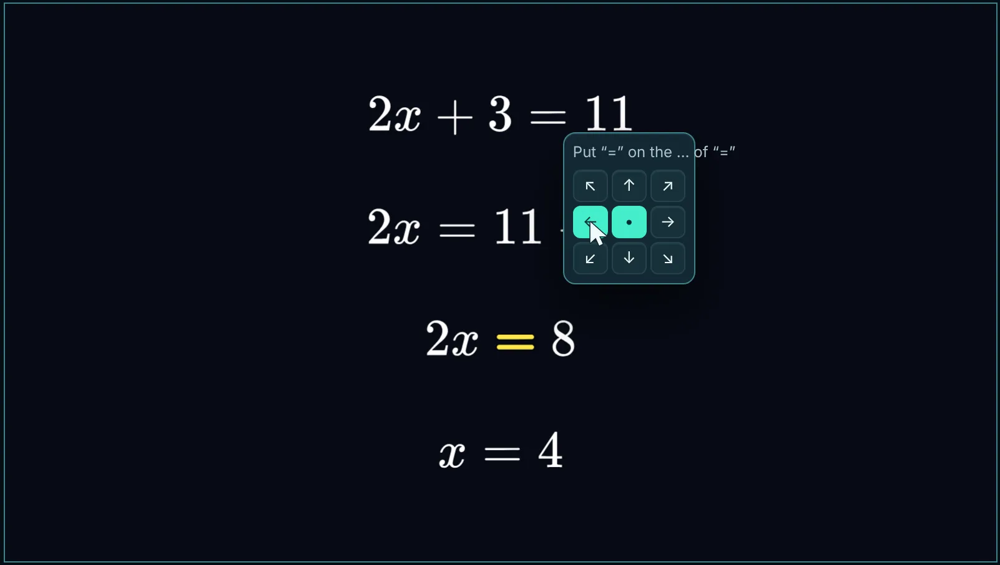
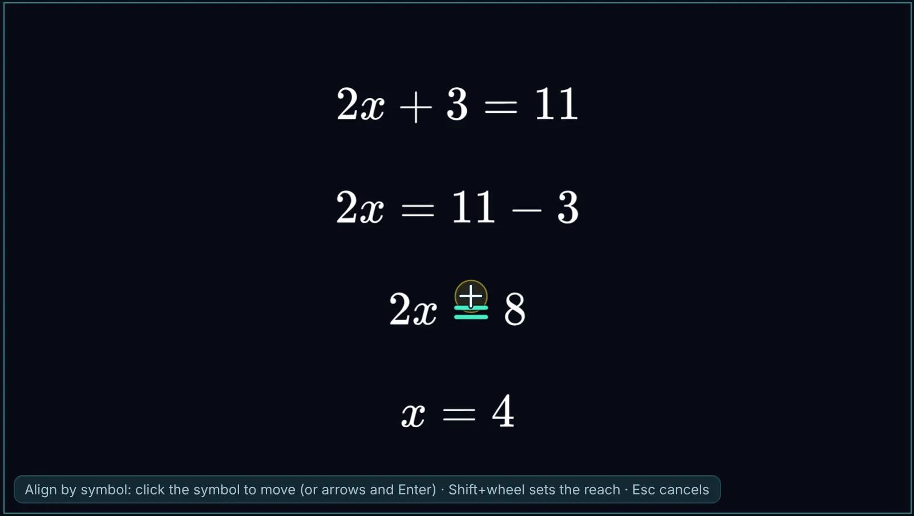
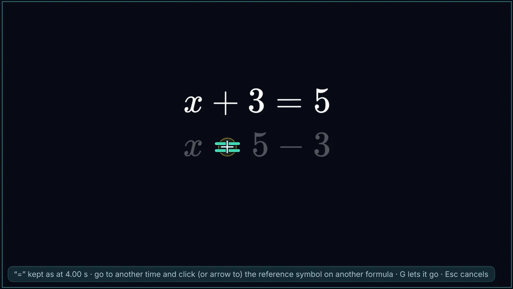
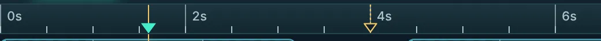
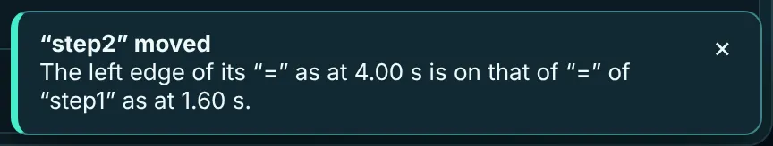
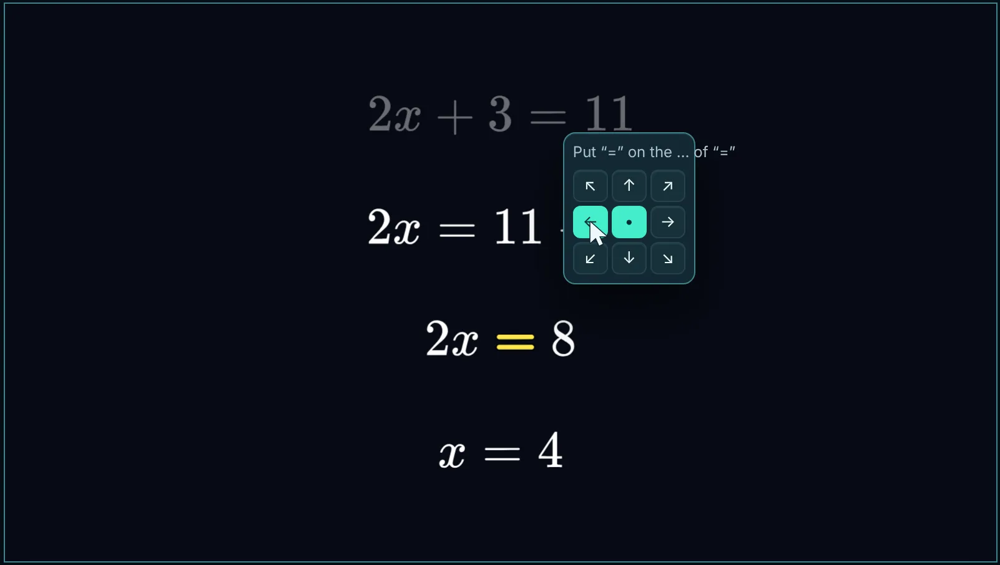

Align by symbol
Align treats a formula as a box. Align by symbol treats it as a handle: pick one glyph of a formula, pick one glyph of another, and the first formula moves so that the two glyphs meet. It works for formulas on screen together, and for formulas that never are.
What it is for
A derivation written line by line looks right when the equals signs are in a column. The
lines have different lengths, so centring them, or aligning their left edges, does not do
it. Aligning by the = does: each line moves until its = is under
the one above.
Aligning by a symbol
It is a mode of the Preview with two clicks. Start it with Alt+G, with the first button of the view toolbar (Align by symbol), with Edit ▸ Align ▸ By symbol… or with Align ▸ Align by symbol… in the right-click menu of a formula. A hint at the bottom of the Preview says what to click.
- Click the symbol to move, a glyph of the formula that will move.
- Click the reference symbol, a glyph of another formula. That formula stays where it is.
- A compass opens on the reference. Choose where on the reference symbol the first symbol lands.
= of the second line; the
= of the first; Left edge on the compass. The whole
second line moves so that its = is under the first's.The alignment is one undo step: Ctrl+Z puts the line back.
The compass has nine places, the nine directions of Manim: the four edges, the four corners and the centre of the reference symbol.

| Compass | The first symbol lands… | What moves |
|---|---|---|
| ↖ Upper left corner, ↗ Upper right corner, ↙ Lower left corner, ↘ Lower right corner | with that corner of its box on the same corner of the reference's | the formula, both ways |
| • Centre | with its middle on the middle of the reference | both ways |
| ← Left edge, → Right edge | with its left (right) edge on the left (right) edge of the reference | sideways only |
| ↑ Top edge, ↓ Bottom edge | with its top (bottom) edge on the top (bottom) edge of the reference | up or down only |
Esc, or a click outside the compass, cancels the alignment.
To put the equals signs of two lines in one column, the edge is the right choice: Left edge moves the second line sideways and leaves its height alone. Centre would move it onto the first line.
The halo
While the mode is on, the pointer carries a halo, a circle. The symbol nearest to the pointer within the circle is outlined, and a click takes that one, so thin symbols — a minus, a dot, the bars of an equals sign — can be hit without aiming exactly. Shift and the wheel make the circle larger or smaller (from 6 to 60 pixels; 14 at the start). The reach is kept, and it is the same one the circle selector uses.

=, not on it; the halo reaches it and the
outline says it is the one a click would take.From the keyboard
Every click has a key. While the mode is on, the arrow keys walk the glyphs on screen: the formulas are rows, from the top of the scene down, each with its glyphs in order; ← and → walk a row, ↑ and ↓ change row, keeping the column. The glyph under the cursor is outlined, and Enter takes it, as a click would. The compass takes the arrows and Enter too. Esc leaves the mode.
The alignment above, with the keyboard alone: the first arrow puts the cursor on the first
glyph; the arrows take it to the = of the second line and
Enter takes it; the arrows again to the = of the
first line and Enter; in the compass, ←
and Enter.
Across time
The lines of a derivation are often not on screen together: one comes in as the one before it leaves. The two symbols are measured at the playhead, so there is no moment to click both. G solves it.
- With the playhead where the formula to move is on screen, start the mode and click its symbol.
- Press G. The symbol is kept as it is at this instant, and the hint says so.
- Move the playhead to where the reference is on screen. The formula you keep stays in view, faint, where it is at the kept instant, so that you can see what the reference is for, and the ruler of the timeline marks the instant.
- Click the reference symbol and choose a side of the compass.
In the derivation of the example at the end of the page, the second line is on screen
alone at 4 s and the first alone at 1.6 s. At 4 s: Alt+G, click
the = of the second line, G. Go to 1.6 s: the first
line shows, and the second appears faint where it is at 4 s. Click the = of
the first line and choose Left edge. Back at 4 s the second line
has moved: its = is where the first line's is.
Ctrl+Z puts it back.

Only the keyframe in effect at the kept instant changes, and nothing else of the timeline: the playhead stays where you left it. A notice says what was done, and, when something moves beyond it, what.


- G again lets the symbol go. Esc or Alt+G leave the mode and remove the mark and the faint formula.
- The faint formula does not answer the pointer: it cannot be the reference.
- Without G, a symbol whose formula is not on screen at the playhead cannot be measured: a notice reminds you to press G after clicking it, before moving the playhead.
When G keeps nothing
An alignment has to hold, so G refuses, with a notice that says why, when the formula
- is not on screen at the playhead;
- hangs on glyphs of another formula (a brace, a label: use Detach in the Animations panel first);
- is on a locked track, or locked in the preview;
- has the end state of one of its parts under edit (finish that edit first with Esc);
- is locked after its transformations and one has started by that instant: align it at a time before its first transformation, or at the end state of one (select its block and click its end icon), or unlock the clip with the padlock on the timeline;
- is moving at that instant: a transformation, a transformation of that part or an emphasis is running, so a shift written there would not hold. Pick a time when it is at rest.
When the alignment is made but something moves beyond it, the closing notice lists that too: only the end of a transformation moved; a later transformation takes the formula to a position of its own, which did not move; the symbol was moved by a transformation of its part; the reference itself moves between the two instants.
With a locked formula as the reference
A formula locked in the preview is out of the pointer's reach. To align to a symbol of one, use Shift+Alt+G (or Edit ▸ Align ▸ By symbol of a locked formula…): the first click is on a formula that is not locked, the one that moves; the second is on a locked formula, whose symbols can now be clicked, however many formulas lie over it. The locked formula stays, and the other one moves to it.

= of the
third line, a click on the = of the first one opens the compass on it: the
third line will move there.With no formula locked, the shortcut says so in a notice and does not start the mode.
Good to know
- The modes of the Preview (align by symbol, Edit path, Edit curve, drawing a line with Add line, colours in order, a shape's target) are on one at a time: starting one ends the one that was on.
- A formula edited while the mode is on keeps its symbol: the mode follows the glyph into the new render, and ends, with a notice, when the glyph is no longer there.
- The reference cannot be on the formula that moves.
- A formula that cannot be edited now (a locked track, locked in the preview, locked after its transformations) stays where it is, and a notice says so.
Try it
Open the start file: four lines of a solution, each centred. Line them up by their equals signs.
Try it across time
The second file is a derivation, x + 3 = 5 into x = 5 − 3 into
x = 2, each line under the one before and centred on its own, so the
= jumps sideways from line to line. Line them up by the = with
G.
Keys of this page
| Keys | What they do |
|---|---|
| Alt+G | Start Align by symbol, or leave it |
| Shift+Alt+G | The same, with the reference symbol on a formula locked in the preview |
| ← → ↑ ↓, Enter | Walk the glyphs on screen and take one; in the compass, choose a place |
| G | After the first symbol: keep it as it is at the playhead, for a reference at another time; again, let it go |
| Shift + wheel | Make the halo larger or smaller |
| Esc | Leave the mode, or close the compass |
| Ctrl+Z | Undo the alignment, one step |
See also Align and distribute to line up edges and centres, and Picking glyphs with Alt for choosing glyphs for a colour, a brace or a shape.